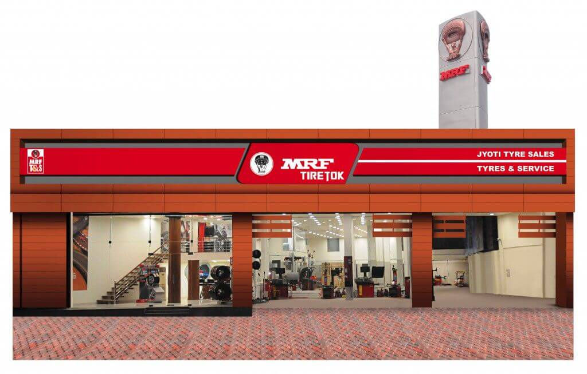
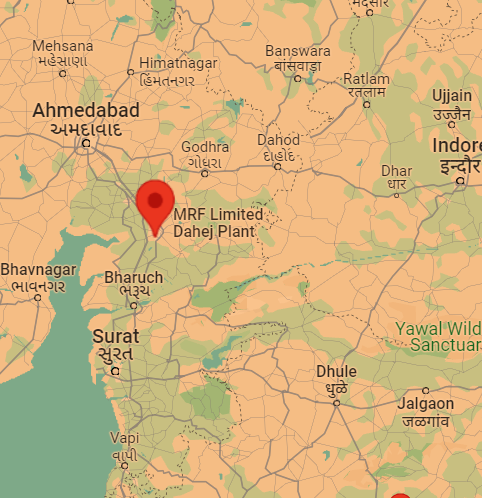
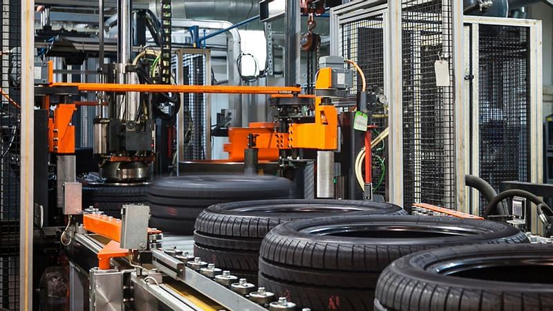
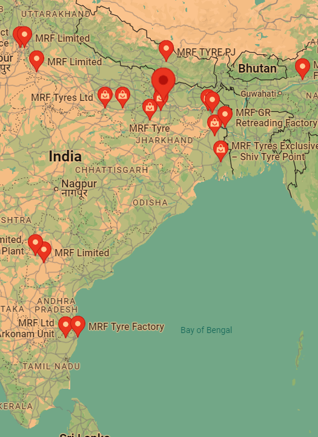
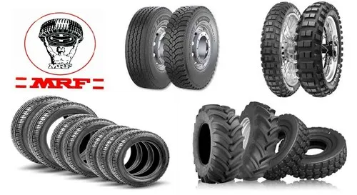
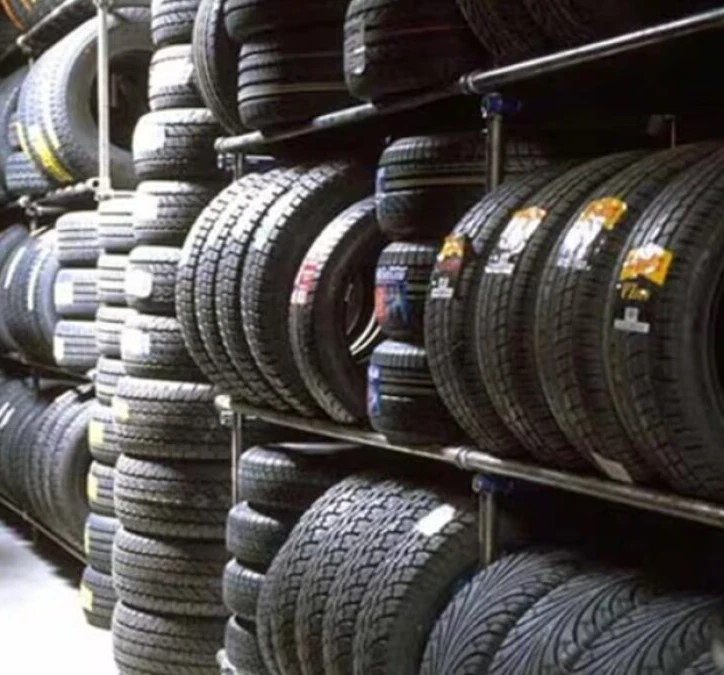

Global Market Analysis of MRF
- Market Presence:
-
MRF has a significant presence in the global market, especially in regions like Asia-Pacific, the Middle East, and Africa.
-
The company exports its products to over 65 countries, leveraging its strong brand reputation and quality products.
- Product Range:
-
MRF offers a wide range of products including tires for passenger cars, trucks, motorcycles, farm vehicles, and industrial equipment.
-
The company's diverse product portfolio helps it cater to different market segments and regions.
- Competitive Landscape:
-
MRF faces competition from global tire manufacturers like Bridgestone, Michelin, Goodyear, Continental, and Pirelli.
-
Despite the competition, MRF maintains a strong market position due to its focus on quality, innovation, and customer service.
- Technological Advancements:
-
MRF invests significantly in research and development to improve product quality and performance.
-
The company has several advanced manufacturing facilities equipped with state-of-the-art technology.


Corporate Headquarters
- Location:
-
MRF's corporate headquarters is located in Chennai, Tamil Nadu, India.
- Functionality:
-
The headquarters oversees global operations, strategic planning, and management decisions.
-
It also houses departments like finance, marketing, human resources, and research and development.


Establishment
-
MRF, which stands for Madras Rubber Factory, is a well-known Indian multinational company that primarily manufactures rubber products, including tyres, tubes, treads, and conveyor belts. It was founded in 1946 by K. M. Mammen Mappillai and is headquartered in Chennai, India.
-
MRF is particularly renowned for its tyres and is one of the largest tyre manufacturers in India. It has a significant presence in the automotive industry and exports its products to several countries around the world. The company also sponsors various sports events and teams, notably in cricket and motorsports, further enhancing its brand visibility.
Location:
- Tamil Nadu
- Telangana
- Kerala
- Gujarat
- Uttar Pradesh


Our Products:
- Passenger Cars:
-
MRF produces tyres specifically designed for passenger cars, focusing on comfort, performance, and durability. They offer different series such as ZVTS, ZLO, and Perfinza for various needs and preferences.
- SUVs and MUVs:
-
MRF provides tyres suitable for Sports Utility Vehicles (SUVs) and Multi-Utility Vehicles (MUVs), which emphasize robustness, off-road capability, and stability. Examples include the Wanderer series.
- Two-Wheelers:
-
MRF manufactures tyres for motorcycles and scooters, ensuring grip, handling, and safety on different road surfaces. Popular models include Nylogrip and Revz series.